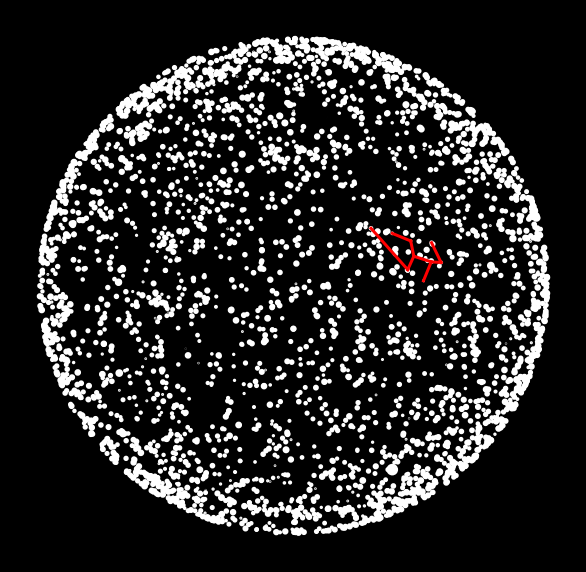

Questions
Contents
Questions#
Question 1#
The file monthly-sunspots.txt contains one floating point number per line. Write a program which opens the file, reads the numbers into a list or array, then plots the data as a line graph.
Question 2#
The time() function returns the number of seconds which have elapsed since January 1 1970.
from time import time
print(time())
1609431989.253785
Write a program which writes the current time to the file current_time.txt. Investigate the difference between opening the file in write mode versus append mode.
Question 3#
Write a program which creates 9 files named element_1.txt to element_9.txt containing the name and description of the first 9 chemical elements listed in the file periodic_table.csv. E.g., element_1.txt should contain:
Hydrogen
colorless gas
Question 4#
In this question you will use data from a star catalogue to create a picture that plots the locations of stars, like this:
{kind=link}
First download the two files:
The file stars.csv contains one line for each star that is represented in the catalogue. The meaning of each field (column) is described below.
The first three fields are the x, y and z coordinates for the star. We will ignore the z coordinate, and use only the x and y coordinates. Each axis in the coordinate system goes from -1 to +1, and the centre point is 0,0.
The fourth field is the Henry Draper number, which is simply a unique identifier for the star.
The fifth field is the magnitude (or brightness) of the star.
The sixth field exists only for a small number of stars and is a semicolon-separated list of names for a star. A star may have several names.
The fields that you will need for this assignment include the x and y coordinates, the magnitude and the name of each star.
Step 1#
Create four empty lists
x,y,magandstar_nameto store the x coordinate, y coordinate, magnitude and star name of each star.Open the file
stars.csvand usecsv.readerto load the contents into the four lists. Make sure you convert each to the appropriate data type (float or string).Where there is more than one star name, store the second one (using
string.splitandstring.strip)
Step 2#
Make a scatter plot of the x, y coordinates. Use the following code to set up your plot:
fig, ax = plt.subplots(figsize=(5,5))
fig.patch.set_facecolor("black") # set the figure background to black
ax.axis("off") # remove the axes
ax.set_facecolor("black") # set the plot background to black
Use ax.scatter(x, y) to plot the stars. Try to make it look similar to the image above by passing suitable values for the marker, s and color parameters (see https://matplotlib.org/3.3.3/api/_as_gen/matplotlib.pyplot.scatter.html).
Step 3#
The file Cas_lines.txt contains two star names per line. Each pair of star names represent one line to be drawn for the constellation. Write code which iterates over each line in the file, and for each line, determines the x and y coordinates of the two stars, then draws a line between them on the plot.
The following code will plot a line between coordinates (x_1, y_1) and (x_2, y_2).
ax.plot([x_1, x_2], [y_1, y_2])
Open the file
Cas_lines.txtand usecsv.readerto iterate over each row. For each row:use
star_name.indexto find the index of the two star names in the list of star names you created in step 1.determine the x and y coordinates of each
use the code above to plot a line between them.
Question 5#
In a previous worksheet you wrote a Python script which converted a RNA sequence into a protein by performing the translation (RNA -> amino acid sequence) process. In this question you will extend the script to:
Read a DNA sequence from a
fastafileTranscribe the sequence (convert from DNA to RNA) by replacing all occurrences of “T” with “U”.
Translate the sequence (already done last week)
Count the frequency of each amino acid and plot it as a histogram
{kind=link}
Step 1#
Write a script which opens the file Ps_kr_G2B.fasta and reads the DNA sequence into a string variable. Make sure you discard the line beginning ‘>’ and remove newline characters.
Step 2#
Convert the DNA sequence to an RNA sequence using string.replace to replace each occurrence of T with U. (e.g. “CTGCTC” should become “CUGCUC”).
Step 3#
Translate the RNA sequence to a protein by generating a string variable containing the amino acid sequence (you can reuse last week’s code).
Step 4#
Write a script which creates a list which contains the number of occurrences of each amino acid in the protein. Plot a histogram showing the frequency of each amino acid. Add y-axis label ‘Frequency’ and x-axis label ‘Amino acid’.